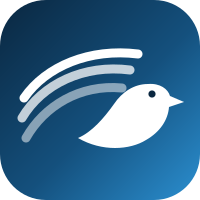
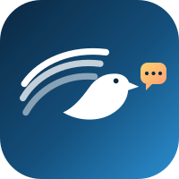

Where it comes from: your current logo is a bird carrying a scroll. Version 2 keeps the carrying idea and swaps the scroll for a chat bubble: the message carrier of then becomes the message carrier of now.
The messenger bird, carried forward. Its wing is three transmission arcs: the signal. No shopping, just communication. Two versions below.
Where it comes from: your current logo is a bird carrying a scroll. Version 2 keeps the carrying idea and swaps the scroll for a chat bubble: the message carrier of then becomes the message carrier of now.
The bird alone, wing as signal arcs. The cleanest and most timeless. Reads as "a messenger, transmitting".

The bird delivers a chat bubble. Says "messaging app" at a glance, and links straight to your current logo's scroll.
